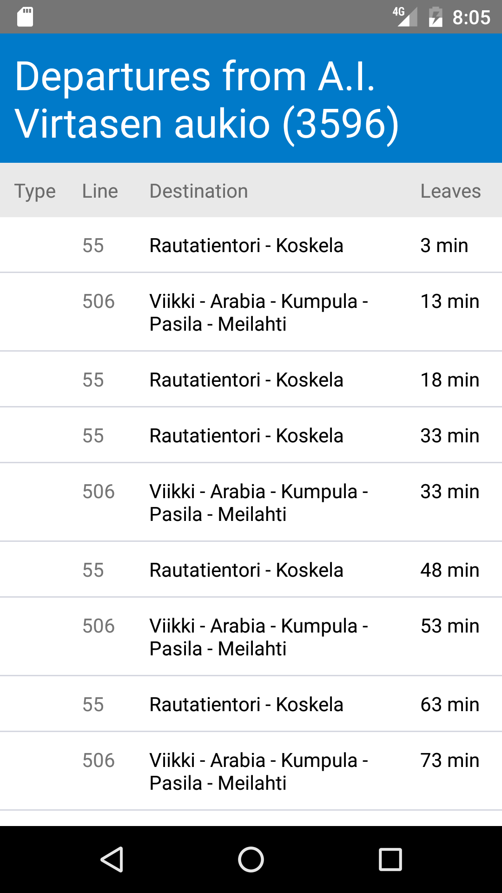

Digital stop button for your mobile phone.
STOP 2.0 is an application that allows the user to stop the desired bus in advance. It's intended to take into account also those with special needs waiting for transport.
When waiting for a bus...
STOP 2.0 finds the nearest bus stop according your coordinates. Choose the bus you want to get on and the bus will stop at your bus stop.
When on the bus...
STOP 2.0 lists the remaining stops of your bus. Choose the stop where you want to get off. The bus will stop there and you also get notification when you are near.